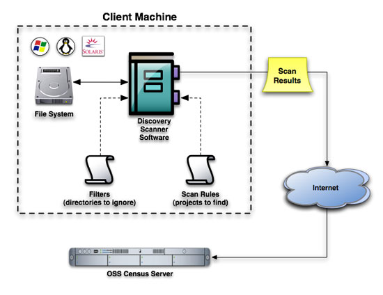

Section 2: The Basics
Section 3: Beyond the Basics
Section 4: Filters and Rules
Section 5: Help and Troubleshooting
OSS Discovery (Census Edition) finds open source software installed on a computer. It can be used to inventory open source software in use both across an enterprise and on a single machine. In the future, OSS Discovery (Census Edition) will also enable individuals and companies to easily contribute data to The Open Source Census.
OSS Discovery (Census Edition):
Includes an extensible library of project rules – OSS Discovery (Census Edition) uses a library of open source “project fingerprint rules” to uniquely identify a wide range of open source software. Users wishing to contribute results to the Open Source Census may not add custom rules at this time.
Works
with software distribution tools – Enterprises can use their
existing software distribution tools to deliver OSS Discovery (Census Edition) to
multiple machines and remotely execute scans.
Provides
easy-to-understand results – Each OSS Discovery (Census Edition) scan
produces a text file listing the open source packages and versions
found. The results of OSS Discovery (Census Edition) scans can be reviewed for an
individual system, and can also be delivered to a server for
aggregation and further analysis.
Supports a number of platforms – OSS Discovery (Census Edition) scans workstations and servers running Windows, Linux, or Solaris operating systems.
Allows enterprises to contribute to The Open Source Census -- OSS Discovery provides the option to anonymously contribute scan results to The Open Source Census. The Open Source Census is a global, collaborative project to collect and share quantitative data on the use of open source software in enterprise. The Open Source Census began accepting anonymous contributions of scans in early 2008. Scan contributors can see summarized results for their scans and benchmark their open source usage. For more information, visit The Open Source Census website.
OSS Discovery (Census Edition) scans a file system on a computer looking for open source software using what are called fingerprints or project rules to identify each open source package. A project rule is made up of a set of criteria that can uniquely identify a particular such package. These criteria can include factors such as file names, directories, file contents and checksums. Each project rule strives to accurately and uniquely identify a project using the minimum possible set of criteria. This discipline ensures that each project rule can successfully identify the target open source package, while minimizing "false positives" or conflicts with other rules. The broader the criteria, the higher the likelihood of "false positives".
OSS Discovery (Census Edition) comes with a library of project rules that can identify a wide range of open source software. To augment that library, community members can contribute new project rules, and users can add their own custom fingerprints to find any software package in their environment. Users wishing to contribute scans to The Open Source Census may not add custom rules at this time.
Using existing software distribution tools, enterprises can run scans across multiple systems. OSS Discovery (Census Edition) can then be configured to deliver the resulting scans to a central server for aggregation and further analysis.
Highly configurable, OSS Discovery (Census Edition) provides a variety of options that enable users to, among other things, specify the directories and files to scan, determine the volume and content of information reported about the scan and configure locations to send the results.

|
fingerprint |
Also referred to as a project rules, this is the set of criteria used to uniquely identify a particular open source package. |
|
project rule |
Also referred to as a fingerprint, a project rule consists of one or more sets of match rules used to uniquely identify a particular open source project. For example, there is one project rule for Apache and another for Ant. |
|
match rules |
Each project rule has a set of criteria designed to recognize the project's 'fingerprint' referred to as the 'match rules'. Match rules are joined by logical operators and so are also evaluated to a Boolean expression. |
|
match rule |
The atomic component of the OSS Discovery (Census Edition) rule system, an individual match rule attempts to 'match' some aspect of the project. Each match rule is evaluated as 'true' or 'false'. A 'match' is the same as a 'true' value. For a more detialed explanation of the rules, please see Rule Writing for OSS Discovery 2. Note that users who wish to participate in The OSS Census cannot add custom rules at this time. |
|
Fingerprint Live Update |
The OpenLogic service that makes updates to rules available. |
|
filter |
Filters and rules work in tandem to provide OSS Discovery (Census Edition) the parameters it needs to complete a scan. A filter tells OSS Discovery to exclude particular directories or file types. |
|
files examined |
Once all filters have been applied and rules examined, the resulting set of files are the 'files examined'. This is the set of files that OSS Discovery (Census Edition) will scan. |
Users should note that they must have the most recent distribution of OSS Discovery (Census Edition) (such as that available on The Open Source Census Web site) to participate in The Open Source Census. Older versions of OSS Discovery (Census Edition) (available on the OSS Discovery (Census Edition) Web site) will not allow the submission of scans.
Users do not need any special skills to complete basic configuration of OSS Discovery (Census Edition) or to run a scan.
Users wishing to do advanced customization of OSS Discovery (Census Edition) will need the following skills and information:
A working knowledge of XML.
A working knowledge of systems administration and networks.
A working knowledge of the Ruby language.
If you're an enterprise user, perform the following steps to install OSS Discovery (Census Edition):
Obtain the archive of OSS Discovery (Census Edition) appropriate for your operating system (.zip for Solaris and Windows, .tar.gz. for Linux).
Unpack it in your chosen installation directory ([install dir] for the remainder of this document).
Navigate to the install dir and enter:
Windows: discovery.bat --path [path to scan]
Linux/Solaris: ./discovery --path [path to scan]
Members of the developer community will use the same commands in the ossdiscovery-[operating system]-[version]\lib directory of the source.
750KB of disk space
512MB or greater of RAM
Live internet connection if scan results will be submitted or project scan rules updated
Ruby 1.8.5 or 1.8.6 for chosen platform
Operating systems supported and tested:
Solaris 8,9, and 10 (SPARC)
Red Hat Enterprise Linux 3, 4, 5 (x86)
Windows XP, 2000, 2003 (x86)
All of the parameters OSS Discovery (Census Edition) needs to run a scan can be found
in the config.yml file (
[install
dir]\ossdiscovery-[operating system]-[version]\lib\conf\config.yml). OSS Discovery (Census Edition) ships with
this file populated by a set of default values. Users have the option
to override the defaults by modifying the settings in the config.yml
file, or by specifying parameters on the command line when running OSS
Discovery. Note that the config.yml file includes more variables than
are accessible from the CLI. Project developers recommend users set
the properties in the config.yml file with values agreed upon by their
enterprise, and then use the available CLI commands that correlate to
those variables to override the established defaults when necessary.
Advanced users are provided the ability to set a property's value to the evaluated result of a snippet of Ruby code. The code must be placed between '<%' and '%>' as in the following example: log_device =<% File.dirname(__FILE__) %>.
Set the properties below in the config.yml file that ships with OSS Discovery ([ install dir]\ossdiscovery-[operating system]-[version]\lib\conf\config.yml). The explanation of each property contains a link to information on the corresponding command line option if one exists. Pass the command line option to override the config.yml setting.
|
Properties |
Explanation |
|
Specify your company name or nickname.
|
|
|
Must be a universally unique and static value. If a machine id is not specified in the configuration file, OSS Discovery (Census Edition) will replace "default" with an id generated from characteristics of the machine. If you choose to override OSS Discovery (Census Edition)'s assigned value, and you wish to submit your results to OSS Census, the value you assign to each machine must be unique. Corresponding CLI Option: None |
|
|
Use this property to specify a directory for OSS Discovery (Census Edition) to scan. If a directory has been specified in the inclusion filter, it will override the setting here. If --path is passed using the CLI, that value overrides both the value specified here and in the inclusion filter. Corresponding CLI Option: --path |
|
|
Specify which default filter set to use. Corresponding CLI Option: None |
|
|
Specify the location to which you would like the log results sent. This can be a filename or an IO object; typically used parameters are STDOUT or STDERR. Note that if this property is set to STDOUT and the results property is set to STDOUT, the results will be intermingled. Corresponding CLI Option: None |
|
|
Intended for use by developers wishing to work with the OSS Discovery code, this allows the specification of the level of information included in the log results. Valid options are: FATAL, ERROR, WARN, INFO and DEBUG. 'WARN' is the recommended setting for productions runs because it typically includes important warnings while omitting most extraneous information. Corresponding CLI Option: None |
|
|
log: Logger.new(LOG_DEVICE); @@log.level = LOG_LEVEL |
Intended for use by developers wishing to work with the OSS Discovery code, this property allows access to logging via a 'require cofiguration' call. Corresponding CLI Option: None |
|
Specifies the location to which you would like the human readable version of the scan results sent. The default prints to the screen (STDOUT). Note that if this property is set to STDOUT and the logging property is set to STDOUT, the results will be intermingled. Additionally, users can specify a filename and path. To specify a file, the user will need to create a Ruby file to write to. Corresponding CLI Option: --human-results |
|
|
Specifies the path and filename to which OSS Discovery (Census Edition) should write the machine readable version of the scan results. Corresponding CLI Option: --machine-results |
|
|
preview_results: false |
Specifies whether or not to show the machine scan results after the scan is complete. Corresponding CLI Option: none |
|
include_paths: true |
Specifies whether to include location (paths) in the machine scan results file. Corresponding CLI Option: --inc-path |
|
Use to specify whether or not results will be sent for aggregation. When set to false, no results are sent. When set to 'true' results will be sent to the url specified by the destination_server_url property. Corresponding CLI Option: --deliver-results |
|
|
destination_server_url: "http://192.168.10.133:3000/scans/scanpost" |
Specify the url to which results will be sent. Corresponding CLI Option: None |
|
Specify the port to which the user will navigate to view all project rules available on the server. This value must be followed by the value in the rules_files_url_path property. Corresponding CLI Option: None |
|
|
Specifies the name of the file that contains the project rules available on the server. A functional url is achieved by preceeding this value with the value in the server_base_url property. Corresponding CLI Option: None |
|
|
If authentication is in use, set the username with this property. Should be left to 'nil' otherwise. Corresponding CLI Option: None |
|
|
If authentication is in use, set the password using this property. Should be left to 'nil' otherwise. Corresponding CLI Option: None |
|
|
Specify proxy settings for sending a scan. Check with your system administrator to determine if you've got a proxy in use. If so, adjust this property accordingly. If not, leave it set to 'nil'. Corresponding CLI Option: None/
|
|
|
|
Specify proxy settings for sending a scan. Check with your system administrator to determine if you've got a proxy in use. If so, adjust this property accordingly. If not, leave it set to 'nil'. Corresponding CLI Option: None |
|
|
Specify proxy settings for sending a scan. Check with your system administrator to determine if you've got a proxy in use. If so, adjust this property accordingly. If not, leave it set to 'nil'. Corresponding CLI Option: None |
|
Specify proxy settings for sending a scan. Check with your system administrator to determine if you've got a proxy in use. If so, adjust this property accordingly. If not, leave it set to 'nil'. Corresponding CLI Option: None |
|
|
rules_openlogic: File.expand_path(File.join(File.dirname(__FILE__), "..", "rules", "openlogic")) |
Specify the location of the default project fingerpring rules obtained from OpenLogic. Corresponding CLI Option: None |
|
rules_drop_ins: File.expand_path(File.join(File.dirname(__FILE__), "..", "rules", "drop_ins")) |
Specify the location of any additional project fingerprint rules. Corresponding CLI Option: None |
|
rules_dirs: [@@rules_openlogic, @@rules_drop_ins] |
Include the location of default set of project fingerprint rules and any additional rules in one property. Corresponding CLI Option: None |
|
|
Set to the default of 'false', the scan reports only files scanned. This list will only include files the user has permission to see. The list will not include files that have been excluded from the scan based on user permissions. Corresponding CLI Option: None |
|
By default, OSS Discovery (Census Edition) will never check to see if new project rules are available. Set this property to 'true' to check for updated project rules every time OSS Discovery (Census Edition) is invoked, whether or not OSS Discovery (Census Edition) has been asked to scan. Corresponding CLI Option: [--rules-update-get | --rule-update-force] |
|
|
update_rules_and_do_scan: false |
By default, OSS Discovery (Census Edition) separates the actions of updating project rules and scanning./
Set this property to 'true' to link those activities and proceed with a scan every time rules are updated. Corresponding CLI Option: --update-rules |
|
|
Set this property to submit an anonymous scan to the OSS Census. It must be one of the following values:
1 | Afghanistan | 2 | Albania | 3 | Algeria | 4 | Andorra | 5 | Angola | 6 | Antigua and Barbuda | 7 | Argentina | 8 | Armenia | 9 | Australia | 10 | Austria | 11 | Azerbaijan | 12 | Bahamas | 13 | Bahrain | 14 | Bangladesh | 15 | Barbados | 16 | Belarus | 17 | Belgium | 18 | Belize | 19 | Benin | 20 | Bhutan | 21 | Bolivia | 22 | Bosnia and Herzegovina | 23 | Botswana | 24 | Brazil | 25 | Brunei | 26 | Bulgaria | 27 | Burkina Faso | 28 | Burma/Myanmar | 29 | Burundi | 30 | Cambodia | 31 | Cameroon | 32 | Canada | 33 | Cape Verde | 34 | Central African Republic | 35 | Chad | 36 | Chile | 37 | China | 38 | Colombia | 39 | Comoros | 40 | Congo | 41 | Congo, Democratic Republic of | 42 | Costa Rica | 43 | Cote d'Ivoire/Ivory Coast | 44 | Croatia | 45 | Cuba | 46 | Cyprus | 47 | Czech Republic | 48 | Denmark | 49 | Djibouti | 50 | Dominica | 51 | Dominican Republic | 52 | East Timor | 53 | Ecuador | 54 | Egypt | 55 | El Salvador | 56 | Equatorial Guinea | 57 | Eritrea | 58 | Estonia | 59 | Ethiopia | 60 | Fiji | 61 | Finland | 62 | France | 63 | Gabon | 64 | Gambia | 65 | Georgia | 66 | Germany | 67 | Ghana | 68 | Greece | 69 | Grenada | 70 | Guatemala | 71 | Guinea | 72 | Guinea-Bissau | 73 | Guyana | 74 | Haiti | 75 | Honduras | 76 | Hungary | 77 | Iceland | 78 | India | 79 | Indonesia | 80 | Iran | 81 | Iraq | 82 | Ireland | 83 | Israel | 84 | Italy | 85 | Jamaica | 86 | Japan | 87 | Jordan | 88 | Kazakstan | 89 | Kenya | 90 | Kiribati | 91 | Korea, North | 92 | Korea, South | 93 | Kuwait | 94 | Kyrgyzstan | 95 | Laos | 96 | Latvia | 97 | Lebanon | 98 | Lesotho | 99 | Liberia | 100 | Libya | 101 | Liechtenstein | 102 | Lithuania | 103 | Luxembourg | 104 | Macedonia | 105 | Madagascar | 106 | Malawi | 107 | Malaysia | 108 | Maldives | 109 | Mali | 110 | Malta | 111 | Marshall Islands | 112 | Mauritania | 113 | Mauritius | 114 | Mexico | 115 | Micronesia | 116 | Moldova | 117 | Monaco | 118 | Mongolia | 119 | Montenegro | 120 | Morocco | 121 | Mozambique | 122 | Namibia | 123 | Nauru | 124 | Nepal | 125 | Netherlands | 126 | New Zealand | 127 | Nicaragua | 128 | Niger | 129 | Nigeria | 130 | Norway | 131 | Oman | 132 | Pakistan | 133 | Palau | 134 | Panama | 135 | Papua New Guinea | 136 | Paraguay | 137 | Peru | 138 | Philippines | 139 | Poland | 140 | Portugal | 141 | Qatar | 142 | Romania | 143 | Russian Federation | 144 | Rwanda | 145 | Saint Kitts and Nevis | 146 | Saint Lucia | 147 | Saint Vincent and the Grenadines | 148 | Samoa | 149 | San Marino | 150 | Sao Tome and Principe | 151 | Saudi Arabia | 152 | Senegal | 153 | Serbia | 154 | Seychelles | 155 | Sierra Leone | 156 | Singapore | 157 | Slovakia | 158 | Slovenia | 159 | Solomon Islands | 160 | Somalia | 161 | South Africa | 162 | Spain | 163 | Sri Lanka | 164 | Sudan | 165 | Suriname | 166 | Swaziland | 167 | Sweden | 168 | Switzerland | 169 | Syria | 170 | Tajikistan | 171 | Tanzania | 172 | Taiwan | 173 | Thailand | 174 | Togo | 175 | Tonga | 176 | Trinidad and Tobago | 177 | Tunisia | 178 | Turkey | 179 | Turkmenistan | 180 | Tuvalu | 181 | Uganda | 182 | Ukraine | 183 | United Arab Emirates | 184 | United Kingdom | 185 | United States | 186 | Uruguay | 187 | Uzbekistan | 188 | Vanuatu | 189 | Vatican City | 190 | Venezuela | 191 | Vietnam | 192 | Yemen | 193 | Zambia | 194 | Zimbabwe | 195 | Other Corresponding CLI Option: --country |
|
|
Set this variable to specify the Census Code received at registration. As with the others, if the variable is set here it needn't be passed on the command line when the results are delivered to the census server. Corresponding CLI Option: --censuscode |
|
|
Specify whether or not OSS Discovery (Census Edition) should include symlink'd files in the scan. Corresponding CLI Option: --nofollow |
|
|
Specify the maximum number of indirections to follow through symlinks. Corresponding CLI Option: None |
|
throttle_seconds_to_pause: 2.5 |
These values allow users to control the system resources used by
a scan. They work in tandem. The first value indicates the number
of files to be processed before the scan pauses, and the second
value indicates the number of seconds the scan should pause.
|
|
|
Setting this property to true creates an auditable list of all the files examined that triggered successful matches and prints it to the value specified in the 'results' property. This option is included to assist with debugging. Corresponding CLI Option: None |
Use the options in the table below to pass parameters to OSS Discovery (Census Edition) and override the settings in the config.yml file. In the description for each relevant option is a link to the related property that can be set in the configuration file if one exists.
Along with a number of other options, the discovery.bat (Windows)/ ./discovery (Linux) command takes a path as an argument to set the directory to be scanned. Unlike all the other options which are truly optional, OSS Discovery (Census Edition) developers recommend that a path is provided whenever OSS Discovery (Census Edition) is run. If a path and directory are not specified, OSS Discovery (Census Edition) will scan all directories at root and the procedure could take a very long time.
If a path is specified, which we recommend, the syntax of the command to run OSS Discovery (Census Edition) will look like this:
Windows: discovery.bat --path [path to scan]
Linux: ./discovery --path [path to scan]
Add all other options after path. There are no rules dictating the order in which the options are passed.
|
Option
|
Option
|
Explanation |
|
|
-p |
This option tells OSS Discovery (Census Edition) which path to scan, absolute or relative. The default is root. Corresponding property: directory_to_scan |
|
-c |
Specify the absolute or relative path and filename of the configuration file to use for the scan. By default, OSS Discovery (Census Edition) will use the config.yml located in [install dir]\ossdiscovery-[operating system]-[versions]\lib\conf\config.yml. Corresponding property: none |
|
|
-D |
Passing this option instructs OSS Discovery (Census Edition) to deliver a batch of results to the server specified in the config.yml file. This option must have an argument optionally. -D [path to batch location] specifies the location of the results file to send to the server. Use this to batch many scans run with different sets of fingerprint rules and filters, or to send scans collected from many boxes in a distributed environment. Delivering batch results could take quite a long time. Corresponding property: none |
|
|
-d |
Passing this option instructs OSS Discovery (Census Edition) to deliver results to the server specified in the config.yml file. This option takes an argument optionally. -d [filename] specifies the results file to send to the server. Use this to select from many scans run with different sets of fingerprint rules and filters, or to send scans from many boxes in a distributed environment. Corresponding property: send_results |
|
|
-h |
View the help contents on the screen./
Corresponding property: none |
|
|
-u |
Adding the path and/or filename as an argument, use this option to specify where OSS Discovery (Census Edition) should write the human readable results files. If no filename is specified, the default is STDOUT which reports results to the screen. Corresponding property: results |
|
|
|
Use this option to pass a country code. If you have a Census Code, you don't need to specify a country code. Use the country code if you wish to remain anonymous. As with the other values, if the scan is submitted to census server as an anonymous scan and this value is passed, it overrides value in the config.yml file. This is an exception to order dependences and must occur before --deliver-results on the command line. Acceptable values are: 1 | Afghanistan | 2 | Albania | 3 | Algeria | 4 | Andorra | 5 | Angola | 6 | Antigua and Barbuda | 7 | Argentina | 8 | Armenia | 9 | Australia | 10 | Austria | 11 | Azerbaijan | 12 | Bahamas | 13 | Bahrain | 14 | Bangladesh | 15 | Barbados | 16 | Belarus | 17 | Belgium | 18 | Belize | 19 | Benin | 20 | Bhutan | 21 | Bolivia | 22 | Bosnia and Herzegovina | 23 | Botswana | 24 | Brazil | 25 | Brunei | 26 | Bulgaria | 27 | Burkina Faso | 28 | Burma/Myanmar | 29 | Burundi | 30 | Cambodia | 31 | Cameroon | 32 | Canada | 33 | Cape Verde | 34 | Central African Republic | 35 | Chad | 36 | Chile | 37 | China | 38 | Colombia | 39 | Comoros | 40 | Congo | 41 | Congo, Democratic Republic of | 42 | Costa Rica | 43 | Cote d'Ivoire/Ivory Coast | 44 | Croatia | 45 | Cuba | 46 | Cyprus | 47 | Czech Republic | 48 | Denmark | 49 | Djibouti | 50 | Dominica | 51 | Dominican Republic | 52 | East Timor | 53 | Ecuador | 54 | Egypt | 55 | El Salvador | 56 | Equatorial Guinea | 57 | Eritrea | 58 | Estonia | 59 | Ethiopia | 60 | Fiji | 61 | Finland | 62 | France | 63 | Gabon | 64 | Gambia | 65 | Georgia | 66 | Germany | 67 | Ghana | 68 | Greece | 69 | Grenada | 70 | Guatemala | 71 | Guinea | 72 | Guinea-Bissau | 73 | Guyana | 74 | Haiti | 75 | Honduras | 76 | Hungary | 77 | Iceland | 78 | India | 79 | Indonesia | 80 | Iran | 81 | Iraq | 82 | Ireland | 83 | Israel | 84 | Italy | 85 | Jamaica | 86 | Japan | 87 | Jordan | 88 | Kazakstan | 89 | Kenya | 90 | Kiribati | 91 | Korea, North | 92 | Korea, South | 93 | Kuwait | 94 | Kyrgyzstan | 95 | Laos | 96 | Latvia | 97 | Lebanon | 98 | Lesotho | 99 | Liberia | 100 | Libya | 101 | Liechtenstein | 102 | Lithuania | 103 | Luxembourg | 104 | Macedonia | 105 | Madagascar | 106 | Malawi | 107 | Malaysia | 108 | Maldives | 109 | Mali | 110 | Malta | 111 | Marshall Islands | 112 | Mauritania | 113 | Mauritius | 114 | Mexico | 115 | Micronesia | 116 | Moldova | 117 | Monaco | 118 | Mongolia | 119 | Montenegro | 120 | Morocco | 121 | Mozambique | 122 | Namibia | 123 | Nauru | 124 | Nepal | 125 | Netherlands | 126 | New Zealand | 127 | Nicaragua | 128 | Niger | 129 | Nigeria | 130 | Norway | 131 | Oman | 132 | Pakistan | 133 | Palau | 134 | Panama | 135 | Papua New Guinea | 136 | Paraguay | 137 | Peru | 138 | Philippines | 139 | Poland | 140 | Portugal | 141 | Qatar | 142 | Romania | 143 | Russian Federation | 144 | Rwanda | 145 | Saint Kitts and Nevis | 146 | Saint Lucia | 147 | Saint Vincent and the Grenadines | 148 | Samoa | 149 | San Marino | 150 | Sao Tome and Principe | 151 | Saudi Arabia | 152 | Senegal | 153 | Serbia | 154 | Seychelles | 155 | Sierra Leone | 156 | Singapore | 157 | Slovakia | 158 | Slovenia | 159 | Solomon Islands | 160 | Somalia | 161 | South Africa | 162 | Spain | 163 | Sri Lanka | 164 | Sudan | 165 | Suriname | 166 | Swaziland | 167 | Sweden | 168 | Switzerland | 169 | Syria | 170 | Tajikistan | 171 | Tanzania | 172 | Taiwan | 173 | Thailand | 174 | Togo | 175 | Tonga | 176 | Trinidad and Tobago | 177 | Tunisia | 178 | Turkey | 179 | Turkmenistan | 180 | Tuvalu | 181 | Uganda | 182 | Ukraine | 183 | United Arab Emirates | 184 | United Kingdom | 185 | United States | 186 | Uruguay | 187 | Uzbekistan | 188 | Vanuatu | 189 | Vatican City | 190 | Venezuela | 191 | Vietnam | 192 | Yemen | 193 | Zambia | 194 | Zimbabwe | 195 | Other Corresponding property: country |
|
|
-G |
Use this option to specify the Census Code received at registration. Corresponding property: census_code |
|
|
--inc-path |
-I |
This option reports the path/location of detected packages in machine scan results. Corresponding property: include_paths |
|
|
-e |
This option prints to the screen files excluded from the scan, and the filter that excluded them. Corresponding property: None |
|
-f |
This option prints to the screen a list of all files found in the scan that matched a rule or other criteria. Corresponding property: None |
|
-g |
This option prints to the screen a list of generic filters that will be active and the directories that will be excluded, unless specified otherwise, during the next scan. Corresponding property: None |
|
|
-i |
After OSS Discovery (Census Edition) applies all filters and rules, the files left are called 'files examined', or 'foi'. These are the files that OSS Discovery (Census Edition) will scan. This option prints the list of files examined to the screen. Corresponding property: None |
|
|
|
-o |
This option prints to the screen the operating system, version, and distro on which discovery is running. Corresponding property: None |
|
-j |
This option prints to the screen a list of the projects that OSS Discovery is capable of finding. Corresponding property: None |
|
|
|
-M |
This option prints duplicated digests if the same MD5 digest is used in two or more match rule definitions. Corresponding property: None |
|
|
-t |
This option prints to the screen the machine ID that will be reported with scan results. Corresponding property: None |
|
-m |
Adding the filename and the absolute or relative path, use this option to specify where OSS Discovery (Census Edition) should write the machine readable results files. The machine readable results differ from the human readable results in that they're structured so that server can parse it. By default, OSS Discovery (Census Edition) writes machine results to scanresults-census.txt. Corresponding property: machine_results |
|
|
-S |
This option tells OSS Discovery (Census Edition) not to follow symlinks. Corresponding property: follow_symlinks |
|
|
-R |
Pass this option to view the machine results in the console when the scan is complete. Corresponding property: None |
|
|
-P |
Pass this option to identify the scan as that of a production machine in the results. Corresponding property: None |
|
|
-x |
Adding any number as an argument, use this option to force OSS Discovery to provide indications of progress. A 'dot' will appear in the progress bar on the command line at each increment specified. Corresponding property: None |
|
|
[-G | -F] |
This option allows OSS Discovery (Census Edition) to retrieve updates from OpenLogic to the project rules or force updates to the rules, but does not execute a scan. Parameters such as urls will come from the config.yml file. Corresponding property: update_rules |
|
|
-T |
Use this option to enable throttling of the scanner so all system resources are not fully dedicated to the scan. The throttle_* properties in the config.yml file allow you to specify the parameters. Corresponding property: throttle_number_of_files |
|
|
-r |
This option contacts OpenLogic to obtain any updates to project rules prior to running a scan. Corresponding property: update_rules_and_do_scan |
|
|
-v |
This option prints to the screen the version of OSS Discovery (Census Edition). Corresponding property: None |
Use the software distribution mechanism standard to your organization to distribute OSS Discovery (Census Edition) to multiple machines. Project developers recommend configuring the config.yml to allow collection of the results files in a central location.
Filters and rules work in tandem to provide OSS Discovery (Census Edition) the direction it needs to complete a scan. Filters specify directories to exclude, like the trash. Project rules tell OSS Discovery (Census Edition) how to recognize open source packages as it walks the directories remaining after filters are applied.
Managing filters and rules can impact the performance, precision and accuracy of a scan. For example, for a fast scan, you'd exclude all extraneous directories and you'd use a filename match. To provide extra information - like what package version is installed - you'd need both a filename-match and a binary-match that can extract or deduce the version information from the binary. The latter would take more time because it has to read the file and perform a search for it to find a pattern that the author has defined as indicative of a version. Given all this work, the scan will proceed more slowly; the results, however, will be more precise.
It's possible to create new scan filters, and to specify different filter sets for OSS Discovery (Census Edition) to use when scanning a drive.
Write the new filter using an existing example ( [install dir]\ossdiscovery-[operating system]-[version]\lib\filters) and place the filter.rb file in the [install dir]\ossdiscovery-[operating system]-[version]\lib\filters directory.
Add the new filter by adding a 'require' line to the generic-exclusions.rb file (located in the [install dir]\ossdiscovery-[operating system]-[version]\lib\filters directory ). Follow the existing syntax and OSS Discovery will pull in the new filter.
Note: If you intend to contribute your results to The Open Source Census, you cannot add custom rules at this time.
Users can customize a scan by leveraging existing match rules to create a new project rule for any project not already in the OSS Discovery Library. A project rule is comprised of a set of match rules configured to locate some aspect of the project. Each project has its own project rule - Apache, for instance. Apache's project rule consists of match rules configured to find it based on its particular characteristics. The match rules in each project's rule set can be combined using logical expressions (AND, OR) and precedence operators (), so the author can describe the order in which the rules should be evaluated.
There are 4 major match rule types:
filename matches -- matches a specific filename or regex. This is an existence check only, and will rarely give provide the version.
binary matches -- match text within binary content. This works well at retrieving version information and is commonly used for C projects and other executables where MD5 match techniques are not reliable.
md5 checksum matches -- matches the md5 sum of given file. This is an exact match commonly used for Java projects (*.jar files).
filenameVersion matches -- matches filename and version - This works well for files in which the word 'version' appears.
For more detailed information on creating a new project rule, see the project-rules.xml document located in [install directory]\ossdiscovery-[operating system]-[version]\lib\rules and the document Rule Writing for OSS Discovery.
For assistance with specific questions, access the FAQ.
For support, please access OSS Discovery (Census Edition)'s User mailing list. Mailing lists are moderated by the project team and every effort is made to resolve issues in a timely manner.
If you find a problem with OSS Discovery (Census Edition), please visit 'Issue Tracking' area of the site and enter an issue.
Documentation CC Deed
This work is licensed under a Creative Commons Attribution-Share Alike 3.0 United States License.